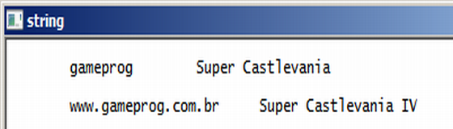
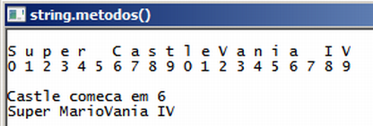

Gameprog - Escola de programação de jogos digitais
Contato: gameprog.br@gmail.com
track06.html
| index | << | >> |
06. Strings em c++
Visão geral Na linguagem c não existe o tipo string e esse 'tipo' é improvisado como uma array do tipo primitivo char. Se você teve alguma experiência com linguagens de alto nível como o Visual Basic ou o Clipper aonde tipo string existe como tipo nativo dessas linguagens, você sabe que trabalhar com strings em c é um processo desconfortável. Para corrigir esse desconforto de trabalho, a linguagem c++ implementa muito bem o tipo string como uma classe com os seus métodos e propriedades. Então o tipo string em c++ é um objeto da classe string. Neste curso como muita frequência, a referência que fizermos ao tipo string será considerado como o objeto string da classe string da linguagem c++. Para diferenciar esses dois padrões de string chamaremos a string pura da linguagem c como c-string. 6.1 Trabalhando com strings c++ // string_decl.cpp // Ilustra definicao de objeto string #include <iostream> #include <string> using namespace std; int main() { system("color f0"); system("title string"); cout << "\n"; string snome = "gameprog"; string sgame("Super Castlevania"); cout << "\t" << snome << "\t" << sgame << "\n\n"; snome = "www." + snome + ".com.br"; sgame += " IV"; cout << "\t" << snome << "\t" << sgame << "\n\n"; system("pause"); } // endmainNa linguagem c++ o tipo string faz parte parte da biblioteca padrão e está definido realmente como uma classe que gera o seu correspondente objeto string. Depois que vc incluir a biblioteca string com esta linha no seu programa: #include <string> vc pode declarar um objeto string de duas maneiras: string sgame ("Castlevania"); // primeira forma de criar uma string string snome = "Gameprog"; // segunda forma de criar uma string snome = "www." + snome + ".com.br"; // www.gameprog.com.br sgame += " IV"; // Super Castlevania IV Veja nas linhas acima que trabalhar com a string c++ é muito mais confortável e intuitivo do que trabalhar com a string criada puramente em c. Nas linhas acima fizemos a concatenação de strings utilizando os operadores + e +=. 6.2 Acessando elemento da string// obtem o tamanho da string ntam = snome.length(); nsize = snome.size(); Uma das propriedades do objeto string é tamanho. Nós podemos obter o tamanho da string através do método length() ou size(), ambos retornam o tamanho da string. // acessa cada elemento for (item = 0; item < ntam; item++) cout << snome[item] << " "; Veja que acessamos cada caracter do objeto string snome usando a notação normal de acesso a elementos de array típica da linguagem c/c++. Podemos também acessar cada caracter da string utilizando o método at(nItem): // acessa cada elemento for (item = 0; item < ntam; item++) cout << snome.at(item) << " "; 6.3 Outros métodos da classe string// string_elemento.cpp // Ilustra acesso a cada elemento da string #include <iostream> #include <string> using namespace std; int main() { system("color f0"); system("title elemento da string"); cout << "\n"; string snome = "gameprog"; int ntam, item, nsize; // obtem o tamanho da string ntam = snome.length(); nsize = snome.size(); // mostra o tamanho cout << "ntam: " << ntam << "\t nsize: " << nsize << endl; // acessa cada elemento for (item = 0; item < ntam; item++) cout << snome[item] << " "; cout << endl; // mostra a posicao de cada elemento for (item = 0; item < ntam; item++) cout << item << " "; cout << "\n\n"; system("pause"); } // endmain
 // string_metodos.cpp // Exemplifica o uso de alguns metodos do objeto string #include <iostream> #include <string> using namespace std; void inicio(); void fim(); int main() { inicio(); int ntam, npos, nitem, nqtd; string snome = "Super CastleVania IV"; ntam = snome.length(); // mostra os caracteres da string snome for (nitem=0; nitem < ntam; nitem++) cout << snome.at (nitem) << " "; cout << endl; // mostra a posicao dos caracteres for (nitem=0; nitem < ntam; nitem++) { if (nitem >= 10) cout << nitem-10 << " "; else cout << nitem << " "; } //endfor cout << "\n\n"; // pesquisa por Castle e retorna a posicao. -1 caso nao encontre npos = snome.find( "Castle" ); // retira uma substring de 6 letras comecando em npos nqtd = 6; string subtxt = snome.substr (npos,nqtd); cout << subtxt << " comeca em " << npos << "\n"; // Substitui 6 letras de snome, comecando na posicao 6 int npos_inicial = 6; nqtd = 6; snome.replace (npos_inicial,nqtd, "Mario"); cout << snome << "\n\n"; fim(); } // endmain void inicio() { system("color f0"); system("title string.metodos()"); cout << "\n"; } // endfunction: initsys() void fim() { cout << "\n"; system("pause"); } // endfunction: endsys()void inicio(); void fim(); inicio() é uma função que criamos para configurar a cor de fundo e o título da janela. fim() é uma função para padronizar o fim do programa com uma pausa para o usuário ler o conteúdo da tela. // pesquisa por Castle e retorna a posicao. -1 caso nao encontre npos = snome.find( "Castle" ); O método find() procura por uma substring e caso localizada retorna a posição de começo da substring na string, caso a substring não seja encontrada o valor de retorno é -1. // retira uma substring de 6 letras comecando em npos nqtd = 6; string subtxt = snome.substr (npos, nqtd); O método substr() retorna uma substring delimitada pelo começo (npos) e pela quantidade (nqtd) de caracteres especificados. // Substitui 6 letras de snome, comecando na posicao 6 int npos_inicial = 6; nqtd = 6; snome.replace (npos_inicial, nqtd, "Mario"); O método replace() substitui uma substring pela substring destino ("Mario") especificada. A substituição ocorre na posição inicial especificada ( npos_inicial) suprimindo a quantidade (nqtd) de caracteres da string original. Suporte ao tipo c-string Para manter compatibilidade com muitas bibliotecas importantes que utilizam o tipo c-string como argumento, o objeto string tem um método importante .c_str() que retorna uma versão c-string (char *) do objeto string sendo utilizado.
| index | << | >> |
Produzido por Gameprog: Jair Pereira - Fev/2006 - Junho/2013 © gameprog.br@gmail.com http://www.gameprog.com.br